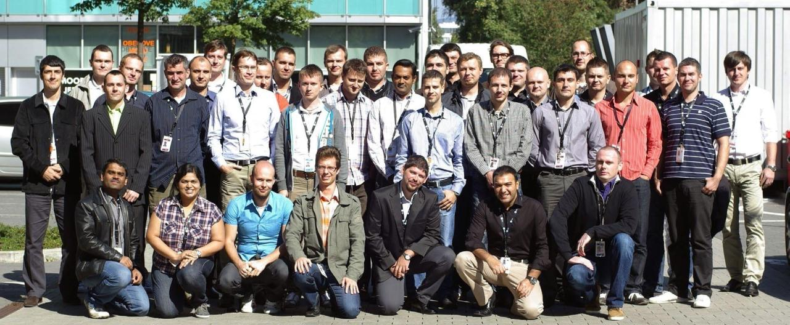

AI Factory & LLMOps
Multi-LLM platforms, AWS Bedrock, OpenAI, Anthropic, RAG, agentic workflows, evaluation, guardrails and observability.
Crissier, Switzerland · Swiss Permit C
AI Infrastructure & Platform Architect
I design and run AI platforms. Before that, I led infrastructure teams in banking, scientific computing and telecommunications.
My background is in keeping infrastructure running: large server estates at AT&T, research computing at the Swiss Institute of Bioinformatics, and banking infrastructure at FlowBank.
Today, at Licorn / OriginAI, I work on two AI platforms, from the GPU infrastructure and model services to data protection and monitoring.
Multi-LLM platforms, AWS Bedrock, OpenAI, Anthropic, RAG, agentic workflows, evaluation, guardrails and observability.
NVIDIA DGX and A100, InfiniBand, WEKA, model serving, scientific computing and AI infrastructure operations.
FINMA/EY audit support, nLPD/GDPR-by-design, PII controls, SLA/KPI governance, ITIL and operational risk.
Terraform/IaC, APIs, microservices, cloud and on-premise operations, vendor governance, incident recovery and change leadership.
2025 - Present
Licorn SA / OriginAI SA · Switzerland
Architecting two production AI platforms: multi-LLM services, FastAPI microservices, NVIDIA DGX, AWS Bedrock, Terraform, PII controls and OpenTelemetry/Langfuse observability.
2023 - 2024
FlowBank · Geneva
Led infrastructure and DevOps across five data centers spanning AWS, Azure and on-premise systems. Owned a CHF 8M budget, led a 12-person team and supported recurring FINMA/EY audits.
2022 - 2023
Swiss Institute of Bioinformatics · Lausanne
Led the infrastructure team supporting scientific computing with NVIDIA A100, InfiniBand and WEKA, including service governance, security and research stakeholder delivery.
2008 - 2014
AT&T Global System Hosting · Bratislava
Led 50+ engineers across 16 nationalities on a 40,000-server and 100,000-VDI estate. Resolved AT&T's largest IT outage at the time and contributed to a 100,000-blade-server data-center design.
From staff badges to server rooms.

BTS in Information Technology
CESI, France · Bac+2 technical diploma
Papers on AI and courses on the infrastructure behind it.